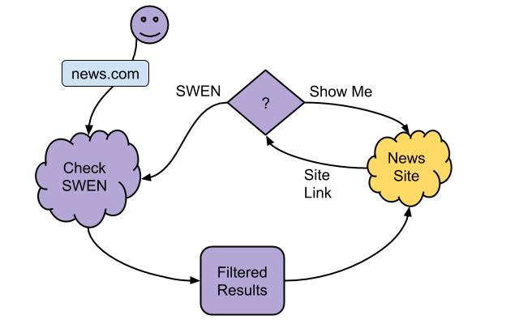
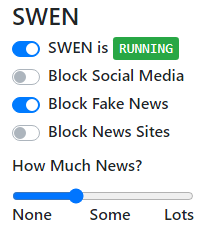
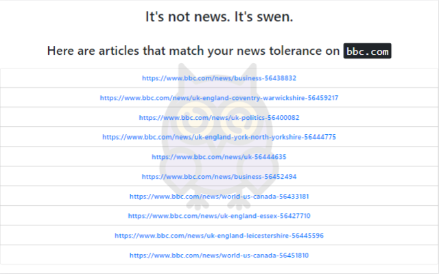
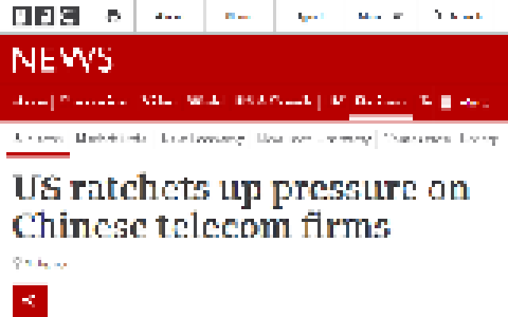
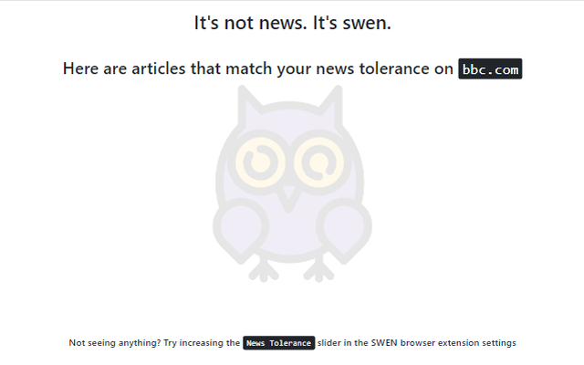

How does it work?
The Basics
Our algorithm gathers news events every fifteen minutes and ranks them based on global importance. We get data on news events and articles from thousands of news sites around the world. Every 15 minutes, we update our database of news articles, and we only store 7 days worth of articles. Using a consensus-type algorithm, we rank the importance of events. If more news articles are talking about an event, it rises up in the rankings. Recency of articles also increases their rank.
Behind the Scenes
SWEN is made of two parts: the browser add-on you see and interact with, and a server that gathers data and makes it available to the browser add-on. Let's look at each of these pieces in detail.
Settings
The browser add-on has a settings screen that allows you to adjust your news tolerance, and toggles to turn on or off certain websites completely. Use the slider to control the number of articles that filter through.
Use the toggles to turn off or on news, social media, or fake news sites.
Use the master toggle to Pause or Resume SWEN.
Browser
When you go to a site, say bbc.com, SWEN checks to see if it is one of 10,000+ news organization sites. If it is, SWEN queries the server component to see what news stories are available for that site and above your news threshold setting. Any matches are displayed as list of links, in this case, from bbc.com. Clicking on a link takes you to the actual page on the site.
 If no articles from the site match your threshold, you see an empty list.
Server
The SWEN server gathers data every 15 minutes from the GDELT Project:
A Global Database of Society
Supported by Google Jigsaw, the GDELT Project monitors the world's broadcast, print, and web news from nearly every corner of every country in over 100 languages and identifies the people, locations, organizations, themes, sources, emotions, counts, quotes, driving our global society every second of every day, creating a free open platform for computing on the entire world.
GDELT gathers and classifies news data into 'events'. Every article from over 10,000+ news sites is crawled and assigned an event. We analyze this data and assign a score based on a consensus algorithm. When a user visits, say, bbc.com, the browser requests data from the server for that URL, and news tolerance setting. If there are any matches, the browser displays them as a list of links that take the user directly to that article on the news site.
For Publishers
SWEN does NOT visit, crawl, or store content from your site. We do not condone circumvention of paywalls or any other revenue and security mechanisms on your site. Individual users are responsible for purchasing content (if applicable) from your site.
Terms
SWEN makes no representations, guarantees, or promises of any kind. If you use SWEN, you may not hold SWEN liable for any reason whatsoever.
SWEN does NOT store or sell ANY of your personal or non-personal data. The whole point is to degrease the ad revenue cycle, so we don't sell any data. (Please Donate to us 😀)
We're all adults here. Be responsible for your actions. Let's try to not ruin a good thing.